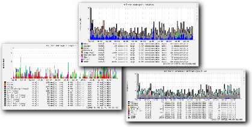

| milter manager Reference Manual |
|---|
This section describes softwares that are depended on milter manager.
milter manager depends on the following softwares. They should be installed before building milter manager.
GLib >= 2.12.3
Ruby >= 1.8.5 (Support 1.9.x since milter manager 1.8.4)
Ruby/GLib2 (Ruby-GNOME2) >= 0.16.0
To run milter manager's unit tests, the following softwares are needed. They are needed for running unit tests but not needed for running milter manager.
Cutter >= 1.0.6
LCOV
milter manager provides a feature that generates graphs for milter's status and so on from milter manager log. The following softwares are required to generate graphs but they are not required for running milter manager.
RRDtool
RRDtool's Ruby bindings
The following software is also needed to integrate with Munin :
munin-node
milter-manager is a core program of the milter manager package. milter-manager works as a milter and connects to MTA and child miltres.
Here are documents about how to install milter-manager to your platform:

milter-manager-log-analyzer is a program that generates graphs from milter-manager's log. Installing milter-manager-log-analyzer is optional.
To confirm milter behavior, we can use milter-manager-log-analyzer. It's convenient for confirming new milter's effect and milter result in chronological order visually.
milter-manager-log-analyzer analyzes milter-manager logs from syslog output. It uses RRDtool to generate graphs. milter-manager-log-analyzer analyzes the logs periodically by cron.
Here are documents about how to install milter-manager-log-analyzer.